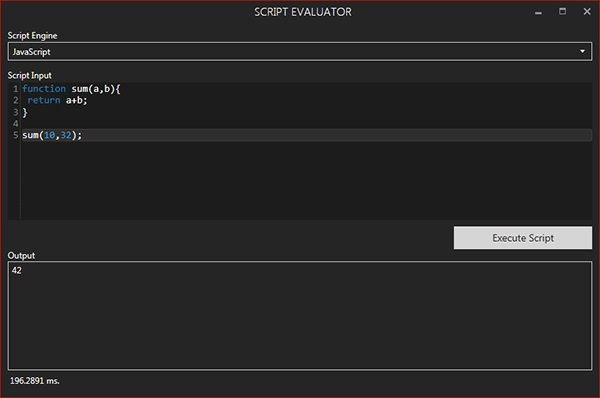

Scripting
JavaScript is the default scripting language in SIML and Syn Bot. Syn Bot Studio uses the same scripting engine present in the Interpreter to ensure that the results are the same during runtime. To test your JavaScripts before adding them in your project you can make use of the Script Evaluator.
To do so click TOOLS -> Script Evaluator
You should write the Script along with a call to your script to test the output. For example to test a JavaScript function that adds 2 numbers. You should declare the function and make a call to the function to test the output as shown below.

Pressing the Execute Script button evaluates the scripts. At the bottom of your scripting window is the time in milliseconds it took for the Script Engine to evaluate your script. This should always be considered when working with large bots that make extensive use of scripts in their knowledge base. Scripts do have a performance penalty when used within Pattern elements as they affect the performance of the Graph processor.